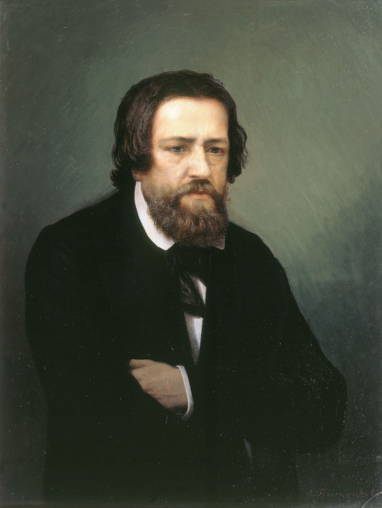

Pintor ruso
Aleksandr Ivánov
1806–1858
Aleksandr Ivánov nació en San Petersburgo en 1806 1. Llegó a Roma en octubre de 1830 y vivió veintiocho años en Italia 123. De 1837 a 1857 pintó «La aparición de Cristo al pueblo», hoy en la Galería Tretiakov 12; se conservan más de trescientos estudios en la Tretiakov y setenta y siete en el Museo Ruso 3. Al final, a partir de la «Vida de Jesús» de Strauss, proyectó una serie bíblica 1. En 1858 volvió a San Petersburgo; el cuadro, expuesto en el Palacio de Invierno y en la Academia, fue recibido con indiferencia 2. Murió de cólera en casa de los hermanos Botkin, horas antes de que el emperador quisiera comprarlo por 15.000 rublos 2.